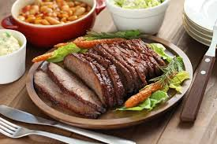

Best Sweet and Sour Brisket

This is the best brisket you will ever taste! No matter who comes for dinner, they always make sure that I'll be making this brisket. It is a very traditional dish for Rosh Hashanah and Passover but it certainly is a winner any time of the year for anyone who loves very tender beef.
Ingredients
- 4 pounds beef brisket
- 1 cup water
- 1 cup ketchup
- ½ cup white vinegar
- 2 onions, sliced
- 1 clove garlic, minced
- ¾ cup brown sugar
- 1 tablespoon salt
Instructions
- Preheat oven to 325 degrees F (165 degrees C).
- Place brisket in a roasting pan. Mix water, ketchup, vinegar, onions, garlic, brown sugar, and salt together in a bowl; pour over brisket.
- Cover roasting pan with aluminum foil and bake in preheated oven for 3 hours. Remove foil and bake an additional 30 minutes.
Enjoy your brisket!
Back to recipes